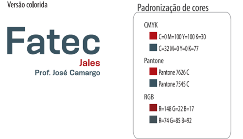
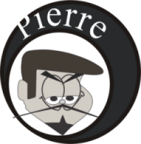
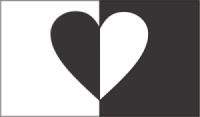
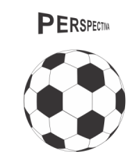
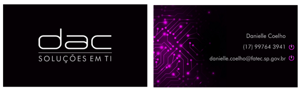

Design Digital
Profa. Fabiana Pupin Masson Caravieri
• Objetivo do curso:
Apresentar as bases do design gráfico de produção de sítios Internet com emprego de softwares. Projetar mock-ups (cenas) usando o software de design digital, em seguida implementar o projeto como um sítio Internet. Definir padrões de cores, descrever e empregar os elementos de artes gráficas como: o ponto, a linha, a forma, a direção, o tom, a cor, a textura, a dimensão, a escala e o movimento. Projetar logos e marcas. Definir e criar um guia com os quatro elementos básicos de qualquer sítio (cabeçalhos, navegação, conteúdo e rodapé) com aplicação de padrões de design, esquemas de cores e fontes tipográficas. Projetar vários estados de interação e comportamento. Criar um sítio completo com várias páginas com todos os elementos de design, HTML e CSS estudados no curso.
Conceitos:
• WebDesign: criação de sites para internet.
• Design: (no sentido de internet), refere-se ao projeto visual e funcional de um produto.
• Digital: informação convertida em formato que o computador entende (números).
O foco do Webdesigner é agregar conceitos de estética do site (design), navegação, usabilidade, com o intuito da comunicação de forma prática.
Identidade visual – Logo Fatec:

Abaixo alguns trabalhos realizados em sala de aula:
   